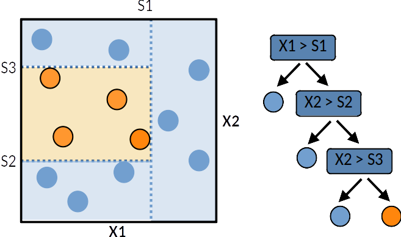
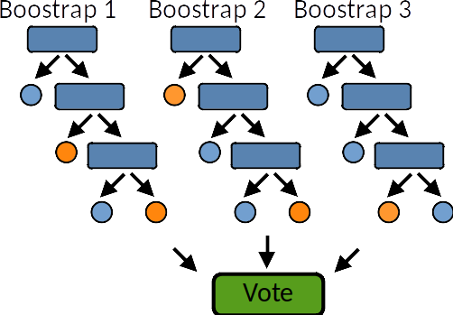
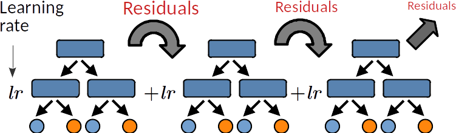

Note
Go to the end to download the full example code.
Non-Linear Ensemble Learning¶
Sources:
Introduction to Ensemble Learning¶
Ensemble learning is a powerful machine learning technique that combines multiple models to achieve better performance than any individual model. By aggregating predictions from diverse learners, ensemble methods enhance accuracy, reduce variance, and improve generalization. The main advantages of ensemble learning include:
Reduced overfitting: By averaging multiple models, ensemble methods mitigate overfitting risks.
Increased robustness: The diversity of models enhances stability, making the approach more resistant to noise and biases.
There are three main types of ensemble learning techniques: Bagging, Boosting, and Stacking. Each method follows a unique strategy to combine multiple models and improve overall performance.
Conclusion
Ensemble learning is a fundamental approach in machine learning that significantly enhances predictive performance. Bagging helps reduce variance, boosting improves bias, and stacking leverages multiple models to optimize performance. By carefully selecting and tuning ensemble techniques, practitioners can build powerful and robust machine learning models suitable for various real-world applications.
from sklearn.ensemble import BaggingClassifier
from sklearn.ensemble import StackingClassifier
from sklearn.ensemble import GradientBoostingClassifier
from sklearn.ensemble import RandomForestClassifier
from sklearn.tree import DecisionTreeClassifier
import matplotlib.pyplot as plt
import numpy as np
import pandas as pd
import seaborn as sns
import matplotlib.pyplot as plt
from sklearn.preprocessing import StandardScaler
from sklearn import datasets
from sklearn import metrics
from sklearn.model_selection import train_test_split
Breast cancer dataset
breast_cancer = datasets.load_breast_cancer()
X, y = breast_cancer.data, breast_cancer.target
print(breast_cancer.feature_names)
X_train, X_test, y_train, y_test = \
train_test_split(X, y, test_size=0.5, stratify=y, random_state=42)
scaler = StandardScaler()
X_train = scaler.fit_transform(X_train)
X_test = scaler.transform(X_test)
['mean radius' 'mean texture' 'mean perimeter' 'mean area'
'mean smoothness' 'mean compactness' 'mean concavity'
'mean concave points' 'mean symmetry' 'mean fractal dimension'
'radius error' 'texture error' 'perimeter error' 'area error'
'smoothness error' 'compactness error' 'concavity error'
'concave points error' 'symmetry error' 'fractal dimension error'
'worst radius' 'worst texture' 'worst perimeter' 'worst area'
'worst smoothness' 'worst compactness' 'worst concavity'
'worst concave points' 'worst symmetry' 'worst fractal dimension']
Decision tree¶
A tree can be “learned” by splitting the training dataset into subsets based on an features value test. Each internal node represents a “test” on an feature resulting on the split of the current sample. At each step the algorithm selects the feature and a cutoff value that maximises a given metric. Different metrics exist for regression tree (target is continuous) or classification tree (the target is qualitative). This process is repeated on each derived subset in a recursive manner called recursive partitioning. The recursion is completed when the subset at a node has all the same value of the target variable, or when splitting no longer adds value to the predictions. This general principle is implemented by many recursive partitioning tree algorithms.
{kind=link}

Decision trees are simple to understand and interpret however they tend to overfit the data. However decision trees tend to overfit the training set. Leo Breiman propose random forest to deal with this issue.
A single decision tree is usually overfits the data it is learning from because it learn from only one pathway of decisions. Predictions from a single decision tree usually don’t make accurate predictions on new data.
tree = DecisionTreeClassifier()
tree.fit(X_train, y_train)
y_pred = tree.predict(X_test)
y_prob = tree.predict_proba(X_test)[:, 1]
print("bAcc: %.2f, AUC: %.2f " % (
metrics.balanced_accuracy_score(y_true=y_test, y_pred=y_pred),
metrics.roc_auc_score(y_true=y_test, y_score=y_prob)))
bAcc: 0.92, AUC: 0.92
Bagging (Bootstrap Aggregating): Random forest¶
Bagging is an ensemble method that aims to reduce variance by training multiple models on different subsets of the training data. It follows these steps:
Generate multiple bootstrap samples (randomly drawn with replacement) from the original dataset.
Train an independent model (typically a weak learner like a decision tree) on each bootstrap sample.
Aggregate predictions using majority voting (for classification) or averaging (for regression).
Example: The Random Forest algorithm is a widely used bagging method that constructs multiple decision trees and combines their predictions.
Key Benefits:
Reduces variance and improves stability.
Works well with high-dimensional data.
Effective for handling noisy datasets.
bagging_tree = BaggingClassifier(DecisionTreeClassifier())
bagging_tree.fit(X_train, y_train)
y_pred = bagging_tree.predict(X_test)
y_prob = bagging_tree.predict_proba(X_test)[:, 1]
print("bAcc: %.2f, AUC: %.2f " % (
metrics.balanced_accuracy_score(y_true=y_test, y_pred=y_pred),
metrics.roc_auc_score(y_true=y_test, y_score=y_prob)))
bAcc: 0.91, AUC: 0.97
Random Forest¶
A random forest is a meta estimator that fits a number of decision tree learners on various sub-samples of the dataset and use averaging to improve the predictive accuracy and control over-fitting. Random forest models reduce the risk of overfitting by introducing randomness by:
{kind=link}

building multiple trees (n_estimators)
drawing observations with replacement (i.e., a bootstrapped sample)
splitting nodes on the best split among a random subset of the features selected at every node
forest = RandomForestClassifier(n_estimators=100)
forest.fit(X_train, y_train)
y_pred = forest.predict(X_test)
y_prob = forest.predict_proba(X_test)[:, 1]
print("bAcc: %.2f, AUC: %.2f " % (
metrics.balanced_accuracy_score(y_true=y_test, y_pred=y_pred),
metrics.roc_auc_score(y_true=y_test, y_score=y_prob)))
bAcc: 0.94, AUC: 0.98
Boosting and Gradient boosting¶
Boosting is an ensemble method that focuses on reducing bias by training models sequentially, where each new model corrects the errors of its predecessors. The process includes:
Train an initial weak model on the training data.
Assign higher weights to misclassified instances to emphasize difficult cases.
Train a new model on the updated dataset, repeating the process iteratively.
4. Combine the predictions of all models using a weighted sum. %% Gradient boosting ~~~~~~~~~~~~~~~~~
Popular boosting algorithms include AdaBoost, Gradient Boosting Machines (GBM), XGBoost, and LightGBM.
Key Benefits:
Improves accuracy by focusing on difficult instances.
Works well with structured data and tabular datasets.
Reduces bias while maintaining interpretability.
The two main hyper-parameters are:
The learning rate (lr) controls over-fitting: decreasing the lr limits the capacity of a learner to overfit the residuals, ie, it slows down the learning speed and thus increases the regularization.
The sub-sampling fraction controls the fraction of samples to be used for fitting the learners. Values smaller than 1 leads to Stochastic Gradient Boosting. It thus controls for over-fitting reducing variance and increasing bias.
{kind=link}

gb = GradientBoostingClassifier(n_estimators=100, learning_rate=0.1,
subsample=0.5, random_state=0)
gb.fit(X_train, y_train)
y_pred = gb.predict(X_test)
y_prob = gb.predict_proba(X_test)[:, 1]
print("bAcc: %.2f, AUC: %.2f " % (
metrics.balanced_accuracy_score(y_true=y_test, y_pred=y_pred),
metrics.roc_auc_score(y_true=y_test, y_score=y_prob)))
bAcc: 0.94, AUC: 0.99
Stacking¶
Stacking (or stacked generalization) is a more complex ensemble technique that combines predictions from multiple base models using a meta-model. The process follows:
Train several base models (e.g., decision trees, SVMs, neural networks) on the same dataset.
Collect predictions from all base models and use them as new features.
Train a meta-model (often a simple regression or classification model) to learn how to best combine the base predictions.
Example: Stacking can combine weak and strong learners, such as decision trees, logistic regression, and deep learning models, to create a robust final model.
Key Benefits:
Allows different types of models to complement each other.
Captures complex relationships between models.
Can outperform traditional ensemble methods when well-tuned.
from sklearn.svm import LinearSVC
from sklearn.pipeline import make_pipeline
estimators = [
('rf', RandomForestClassifier(n_estimators=10, random_state=42)),
('svr', make_pipeline(StandardScaler(),
LinearSVC(random_state=42)))]
stacked_trees = StackingClassifier(estimators)
stacked_trees.fit(X_train, y_train)
y_pred = stacked_trees.predict(X_test)
y_prob = stacked_trees.predict_proba(X_test)[:, 1]
print("bAcc: %.2f, AUC: %.2f " % (
metrics.balanced_accuracy_score(y_true=y_test, y_pred=y_pred),
metrics.roc_auc_score(y_true=y_test, y_score=y_prob)))
bAcc: 0.97, AUC: 0.99
Total running time of the script: (0 minutes 0.660 seconds)